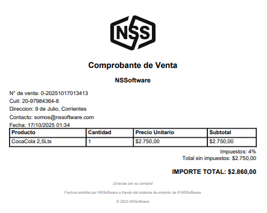
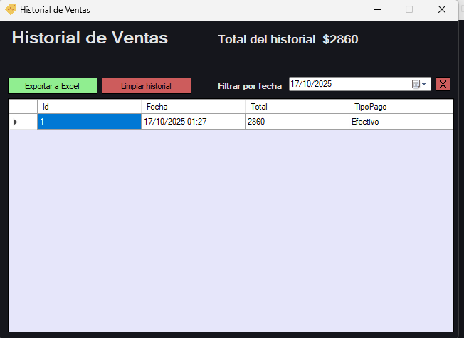
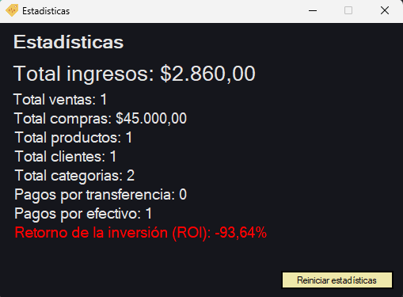
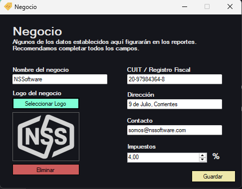

POSKo
Creado por NSSoftware, POSKo es un sistema de punto de venta diseñado con un objetivo claro: simplificar la gestión diaria de tu negocio sin hacerlo complejo. Controlá productos, ventas, clientes, compras y estadísticas desde una interfaz clara, rápida y confiable.
Características
- Gestión de productos, stock y precios
- Importación masiva de productos desde Excel
- Generación de ventas
- Compatibilidad con lectores de códigos de barras
- Tickets no fiscales personalizables
- Comprobantes de venta en formato PDF (no fiscales)
- Gestión de inflación global y/o por producto, categoría o proveedor
- Gestión de categorías
- Historial general de ventas
- Gestión de clientes y cuentas corrientes
- Estadísticas generales y específicas
- Configuración de impuestos, descuentos y recargos
- Gestión de compras
- Gestión de proveedores y pedidos
- Reposición de stock por producto o proveedor
- Configuración completa del comercio
- Cierre de caja diario y generación automática de reportes (Excel)
- Gestión de usuarios y roles (Administrador / Empleado)
- Sistema totalmente personalizable y modificable
POSKo cuenta con una interfaz sencilla, intuitiva y agradable, pensada para que cualquier persona pueda usarlo sin conocimientos técnicos.

Recomendamos comenzar siempre por la sección categorías.
Las categorías son la base de tus productos: comida, bebida, librería, almacén o cualquier rubro que necesites.

POSKo te permite llevar un registro completo y detallado de tus productos.
Nombre, código, categoría, precio de compra, precio de venta y control de stock.
Podés agregar, editar o eliminar productos en segundos. Además, incluye buscador por nombre y filtro por bajo stock, evitando faltantes inesperados.

Reposición de stock aportando trazabilidad y control.

Auditoría detallada de movimientos de stock.

Inflación por producto, categoría, proveedor o de forma global, aplicando a todos los productos registrados.

Exportá tu información a Excel cuando lo necesites.

Generá ventas de forma rápida y clara.

Seleccioná producto, cantidad y tipo de pago, armá el carrito y confirmá la venta.
Visualizá el total con o sin impuestos (configurable según tu negocio).
Generá un comprobante digital en PDF cuando lo necesites.
Accedé al historial detallado de ventas y filtralo por fecha.

Registrá tus clientes, llevá control de compras y visualizá deudas pendientes.
POSKo incluye un panel de estadísticas que muestra el rendimiento real de tu negocio.
Tomá decisiones basadas en datos, no en suposiciones.

Registrá tus compras indicando producto, cantidad y precio unitario.
Ideal para controlar egresos y retorno de inversión.

Gestioná tus proveedores de manera organizada.
Generá pedidos y reportes PDF para enviarles.

Suma de stock organizada según pedidos realizados.

Controlá el estado de cada pedido: pendiente, recibido o en espera.
Configurá los datos de tu negocio. Esta información aparecerá en comprobantes y reportes.

Gestioná usuarios y permisos sin afectar el flujo del negocio.

Integración con impresora térmica para emisión de tickets personalizados.
Importante: los tickets no son fiscales.
POSKo nace con un propósito claro: ser útil, no complejo. Cada función cubre una necesidad real del comerciante, sin sobrecargar el sistema.
POSKo es simple, rápido y eficaz. Contactanos y adaptalo exactamente a tu negocio.
Características Técnicas
POSKo Estándar: SQLite · Local · Sin internet.
Compatible con Windows.
Instalación liviana y guiada.
Licencia de por vida.
$35.000 ARS
Solicitar Volver